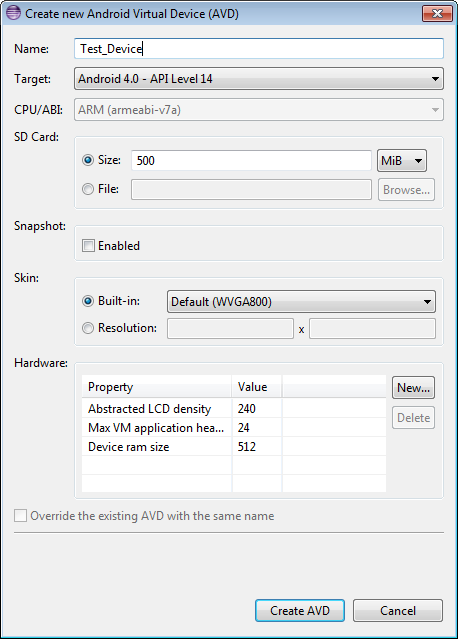
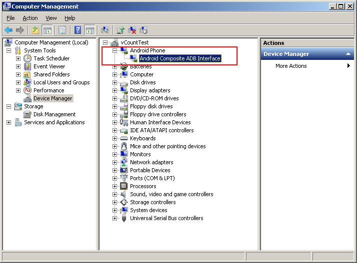
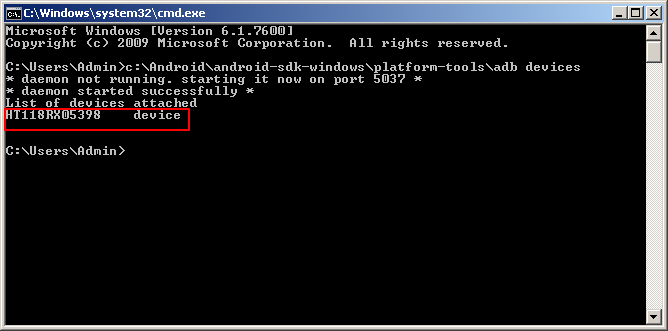
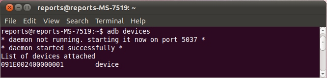

Introduction into Android Development¶
This guide was designed to help you in learning Android development basics and setting up your working environment quickly. It was written with Windows 7 in mind, though it would work with Linux (Ubuntu), Mac OS X and any other OS supported by Android SDK.
If you encounter any error after thoroughly following these steps, feel free to contact us via OpenCV4Android discussion group or OpenCV Q&A forum. We’ll do our best to help you out.
Preface¶
Android is a Linux-based, open source mobile operating system developed by Open Handset Alliance led by Google. See the Android home site for general details.
Development for Android significantly differs from development for other platforms. So before starting programming for Android we recommend you make sure that you are familiar with the following key topis:
- Java programming language that is the primary development technology for Android OS. Also, you can find Oracle docs on Java useful.
- Java Native Interface (JNI) that is a technology of running native code in Java virtual machine. Also, you can find Oracle docs on JNI useful.
- Android Activity and its lifecycle, that is an essential Android API class.
- OpenCV development will certainly require some knowlege of the Android Camera specifics.
Quick environment setup for Android development¶
If you are making a clean environment install, then you can try Tegra Android Development Pack (TADP) released by NVIDIA.
Note
Starting the version 2.0 the TADP package includes OpenCV for Tegra SDK that is a regular OpenCV4Android SDK extended with Tegra-specific stuff.
When unpacked, TADP will cover all of the environment setup automatically and you can skip the rest of the guide.
If you are a beginner in Android development then we also recommend you to start with TADP.
Note
NVIDIA‘s Tegra Android Development Pack includes some special features for NVIDIA’s Tegra platform but its use is not limited to Tegra devices only.
You need at least 1.6 Gb free disk space for the install.
TADP will download Android SDK platforms and Android NDK from Google’s server, so Internet connection is required for the installation.
TADP may ask you to flash your development kit at the end of installation process. Just skip this step if you have no Tegra Development Kit.
(
UNIX) TADP will ask you for root in the middle of installation, so you need to be a member of sudo group.
Manual environment setup for Android development¶
Development in Java¶
You need the following software to be installed in order to develop for Android in Java:
Sun JDK 6 (Sun JDK 7 is also possible)
Visit Java SE Downloads page and download an installer for your OS.
Here is a detailed JDK installation guide for Ubuntu and Mac OS (only JDK sections are applicable for OpenCV)
Note
OpenJDK is not suitable for Android development, since Android SDK supports only Sun JDK. If you use Ubuntu, after installation of Sun JDK you should run the following command to set Sun java environment:
sudo update-java-alternatives --set java-6-sun
Android SDK
Get the latest
Android SDKfrom http://developer.android.com/sdk/index.htmlHere is Google’s install guide for the SDK.
Note
You can choose downloading ADT Bundle package that in addition to Android SDK Tools includes Eclipse + ADT + NDK/CDT plugins, Android Platform-tools, the latest Android platform and the latest Android system image for the emulator - this is the best choice for those who is setting up Android development environment the first time!
Note
If you are running x64 version of Ubuntu Linux, then you need ia32 shared libraries for use on amd64 and ia64 systems to be installed. You can install them with the following command:
sudo apt-get install ia32-libs
For Red Hat based systems the following command might be helpful:
sudo yum install libXtst.i386
Android SDK components
You need the following SDK components to be installed:
Android SDK Tools, revision 20 or newer.
Older revisions should also work, but they are not recommended.
SDK Platform Android 3.0 (
API 11).The minimal platform supported by OpenCV Java API is Android 2.2 (
API 8). This is also the minimum API Level required for the provided samples to run. See the<uses-sdk android:minSdkVersion="8"/>tag in their AndroidManifest.xml files. But for successful compilation the target platform should be set to Android 3.0 (API 11) or higher. It will not prevent them from running on Android 2.2.
See Adding Platforms and Packages for help with installing/updating SDK components.
Eclipse IDE
Check the Android SDK System Requirements document for a list of Eclipse versions that are compatible with the Android SDK. For OpenCV 2.4.x we recommend Eclipse 3.7 (Indigo) or Eclipse 4.2 (Juno). They work well for OpenCV under both Windows and Linux.
If you have no Eclipse installed, you can get it from the official site.
ADT plugin for Eclipse
These instructions are copied from Android Developers site, check it out in case of any ADT-related problem.
Assuming that you have Eclipse IDE installed, as described above, follow these steps to download and install the ADT plugin:
Start Eclipse, then select
Click Add (in the top-right corner).
In the Add Repository dialog that appears, enter “ADT Plugin” for the Name and the following URL for the Location:
Click OK
Note
If you have trouble acquiring the plugin, try using “http” in the Location URL, instead of “https” (https is preferred for security reasons).
In the Available Software dialog, select the checkbox next to Developer Tools and click Next.
In the next window, you’ll see a list of the tools to be downloaded. Click Next.
Note
If you also plan to develop native C++ code with Android NDK don’t forget to enable NDK Plugins installations as well.
Read and accept the license agreements, then click Finish.
Note
If you get a security warning saying that the authenticity or validity of the software can’t be established, click OK.
When the installation completes, restart Eclipse.
Native development in C++¶
You need the following software to be installed in order to develop for Android in C++:
Android NDK
To compile C++ code for Android platform you need
Android Native Development Kit(NDK).You can get the latest version of NDK from the download page. To install Android NDK just extract the archive to some folder on your computer. Here are installation instructions.
Note
Before start you can read official Android NDK documentation which is in the Android NDK archive, in the folder
docs/. The main article about using Android NDK build system is in theANDROID-MK.htmlfile. Some additional information you can find in theAPPLICATION-MK.html,NDK-BUILD.htmlfiles, andCPU-ARM-NEON.html,CPLUSPLUS-SUPPORT.html,PREBUILTS.html.CDT plugin for Eclipse
If you selected for installation the
NDK pluginscomponent of Eclipse ADT plugin (see the picture above) your Eclipse IDE should already haveCDT plugin(that meansC/C++ Development Tooling). There are several possible ways to integrate compilation of C++ code by Android NDK into Eclipse compilation process. We recommend the approach based on Eclipse CDT Builder.
Android application structure¶
Usually source code of an Android application has the following structure:
root folder of the project/jni/libs/res/src/AndroidManifest.xmlproject.properties... other files ...
Where:
the
srcfolder contains Java code of the application,the
resfolder contains resources of the application (images, xml files describing UI layout, etc),the
libsfolder will contain native libraries after a successful build,and the
jnifolder contains C/C++ application source code and NDK’s build scriptsAndroid.mkandApplication.mkproducing the native libraries,AndroidManifest.xmlfile presents essential information about application to the Android system (name of the Application, name of main application’s package, components of the application, required permissions, etc).It can be created using Eclipse wizard or android tool from Android SDK.
project.propertiesis a text file containing information about target Android platform and other build details. This file is generated by Eclipse or can be created with android tool included in Android SDK.
Note
Both AndroidManifest.xml and project.properties files are required to
compile the C++ part of the application, since Android NDK build system relies on them.
If any of these files does not exist, compile the Java part of the project before the C++ part.
Android.mk and Application.mk scripts¶
The script Android.mk usually has the following structure:
1 2 3 4 5 6 7 8 9 10 | LOCAL_PATH := $(call my-dir)
include $(CLEAR_VARS)
LOCAL_MODULE := <module_name>
LOCAL_SRC_FILES := <list of .c and .cpp project files>
<some variable name> := <some variable value>
...
<some variable name> := <some variable value>
include $(BUILD_SHARED_LIBRARY)
|
This is the minimal file Android.mk, which builds C++ source code of an Android application.
Note that the first two lines and the last line are mandatory for any Android.mk.
Usually the file Application.mk is optional, but in case of project using OpenCV, when STL
and exceptions are used in C++, it also should be created. Example of the file Application.mk:
1 2 3 | APP_STL := gnustl_static
APP_CPPFLAGS := -frtti -fexceptions
APP_ABI := all
|
Note
We recommend setting APP_ABI := all for all targets. If you want to specify the
target explicitly, use armeabi for ARMv5/ARMv6, armeabi-v7a for ARMv7, x86
for Intel Atom or mips for MIPS.
Building application native part from command line¶
Here is the standard way to compile C++ part of an Android application:
Warning
We strongly reccomend using cmd.exe (standard Windows console) instead of Cygwin on
Windows. Use the latter if only you’re absolutely sure about, what you’re doing. Cygwin
is not really supported and we are unlikely to help you in case you encounter some
problems with it. So, use it only if you’re capable of handling the consequences yourself.
Open console and go to the root folder of an Android application
cd <root folder of the project>/Run the following command
<path_where_NDK_is_placed>/ndk-build
Note
On Windows we recommend to use
ndk-build.cmdin standard Windows console (cmd.exe) rather than the similarbashscript inCygwinshell.
After executing this command the C++ part of the source code is compiled.
After that the Java part of the application can be (re)compiled (using either Eclipse or Ant build tool).
Note
Some parameters can be set for the ndk-build:
Example 1: Verbose compilation
<path_where_NDK_is_placed>/ndk-build V=1
Example 2: Rebuild all
<path_where_NDK_is_placed>/ndk-build -B
Building application native part from Eclipse (CDT Builder)¶
There are several possible ways to integrate compilation of native C++ code by Android NDK into Eclipse build process. We recommend the approach based on Eclipse CDT Builder.
Important
OpenCV for Android package since version 2.4.2 contains sample projects pre-configured CDT Builders. For your own projects follow the steps below.
Define the
NDKROOTenvironment variable containing the path to Android NDK in your system (e.g."X:\\Apps\\android-ndk-r8"or"/opt/android-ndk-r8").On Windows an environment variable can be set via My Computer -> Properties -> Advanced -> Environment variables. On Windows 7 it’s also possible to use setx command in a console session.
On Linux and MacOS an environment variable can be set via appending a
"export VAR_NAME=VAR_VALUE"line to the"~/.bashrc"file and logging off and then on.Note
It’s also possible to define the
NDKROOTenvironment variable within Eclipse IDE, but it should be done for every new workspace you create. If you prefer this option better than setting system environment variable, open Eclipse menu Window -> Preferences -> C/C++ -> Build -> Environment, press the Add... button and set variable name toNDKROOTand value to local Android NDK path.After that you need to restart Eclipse to apply the changes.
Open Eclipse and load the Android app project to configure.
Add C/C++ Nature to the project via Eclipse menu New -> Other -> C/C++ -> Convert to a C/C++ Project.
And:
Select the project(s) to convert. Specify “Project type” =
Makefile project, “Toolchains” =Other Toolchain.
Open Project Properties -> C/C++ Build, uncheck
Use default build command, replace “Build command” text from"make"to"${NDKROOT}/ndk-build.cmd"on Windows,"${NDKROOT}/ndk-build"on Linux and MacOS.
Go to Behaviour tab and change “Workbench build type” section like shown below:

Press OK and make sure the
ndk-buildis successfully invoked when building the project.
If you open your C++ source file in Eclipse editor, you’ll see syntax error notifications. They are not real errors, but additional CDT configuring is required.
Open Project Properties -> C/C++ General -> Paths and Symbols and add the following Include paths for C++:
# for NDK r8 and prior: ${NDKROOT}/platforms/android-9/arch-arm/usr/include ${NDKROOT}/sources/cxx-stl/gnu-libstdc++/include ${NDKROOT}/sources/cxx-stl/gnu-libstdc++/libs/armeabi-v7a/include ${ProjDirPath}/../../sdk/native/jni/include# for NDK r8b and later: ${NDKROOT}/platforms/android-9/arch-arm/usr/include ${NDKROOT}/sources/cxx-stl/gnu-libstdc++/4.6/include ${NDKROOT}/sources/cxx-stl/gnu-libstdc++/4.6/libs/armeabi-v7a/include ${ProjDirPath}/../../sdk/native/jni/includeThe last path should be changed to the correct absolute or relative path to OpenCV4Android SDK location.
This should clear the syntax error notifications in Eclipse C++ editor.

Debugging and Testing¶
In this section we will give you some easy-to-follow instructions on how to set up an emulator or hardware device for testing and debugging an Android project.
AVD¶
AVD (Android Virtual Device) is not probably the most convenient way to test an OpenCV-dependent application, but sure the most uncomplicated one to configure.
Assuming you already have Android SDK and Eclipse IDE installed, in Eclipse go Window -> AVD Manager.
Press the New button in AVD Manager window.
Create new Android Virtual Device window will let you select some properties for your new device, like target API level, size of SD-card and other.
When you click the Create AVD button, your new AVD will be availible in AVD Manager.
Press Start to launch the device. Be aware that any AVD (a.k.a. Emulator) is usually much slower than a hardware Android device, so it may take up to several minutes to start.
Go Run -> Run/Debug in Eclipse IDE to run your application in regular or debugging mode. Device Chooser will let you choose among the running devices or to start a new one.
Hardware Device¶
If you have an Android device, you can use it to test and debug your applications. This way is more authentic, though a little bit harder to set up. You need to make some actions for Windows and Linux operating systems to be able to work with Android devices. No extra actions are required for Mac OS. See detailed information on configuring hardware devices in subsections below.
You may also consult the official Android Developers site instructions for more information.
Windows host computer¶
Enable USB debugging on the Android device (via Settings menu).
Attach the Android device to your PC with a USB cable.
Go to Start Menu and right-click on Computer. Select Manage in the context menu. You may be asked for Administrative permissions.
Select Device Manager in the left pane and find an unknown device in the list. You may try unplugging it and then plugging back in order to check whether it’s your exact equipment appears in the list.

Try your luck installing Google USB drivers without any modifications: right-click on the unknown device, select Properties menu item –> Details tab –> Update Driver button.

Select Browse computer for driver software.

Specify the path to
<Android SDK folder>/extras/google/usb_driver/folder.
If you get the prompt to install unverified drivers and report about success - you’ve finished with USB driver installation.

- ` `

Otherwise (getting the failure like shown below) follow the next steps.
Again right-click on the unknown device, select Properties –> Details –> Hardware Ids and copy the line like
USB\VID_XXXX&PID_XXXX&MI_XX.
Now open file
<Android SDK folder>/extras/google/usb_driver/android_winusb.inf. Select eitherGoogle.NTx86orGoogle.NTamd64section depending on your host system architecture.
There should be a record like existing ones for your device and you need to add one manually.

Save the
android_winusb.inffile and try to install the USB driver again.
` `
` `
This time installation should go successfully.
` `
And an unknown device is now recognized as an Android phone.
Successful device USB connection can be verified in console via
adb devicescommand.Now, in Eclipse go Run -> Run/Debug to run your application in regular or debugging mode. Device Chooser will let you choose among the devices.
Linux host computer¶
By default Linux doesn’t recognize Android devices, but it’s easy to fix this issue. On Ubuntu Linux you have to create a new /etc/udev/rules.d/51-android.rules configuration file that contains information about your Android device. You may find some Vendor ID’s here or execute lsusb command to view VendorID of plugged Android device. Here is an example of such file for LG device:
SUBSYSTEM=="usb", ATTR{idVendor}=="1004", MODE="0666", GROUP="plugdev"
Then restart your adb server (even better to restart the system), plug in your Android device and execute adb devices command. You will see the list of attached devices:
Mac OS host computer¶
No actions are required, just connect your device via USB and run adb devices to check connection.
What’s next¶
Now, when you have your development environment set up and configured, you may want to proceed to installing OpenCV4Android SDK. You can learn how to do that in a separate OpenCV4Android SDK tutorial.
Help and Feedback
You did not find what you were looking for?- Ask a question on the Q&A forum.
- If you think something is missing or wrong in the documentation, please file a bug report.

Table Of Contents
- Introduction into Android Development
- Preface
- Quick environment setup for Android development
- Manual environment setup for Android development
- Android application structure
Android.mkandApplication.mkscripts- Building application native part from command line
- Building application native part from Eclipse (CDT Builder)
- Debugging and Testing
- What’s next
Previous topic
Introduction to OpenCV Development with Clojure